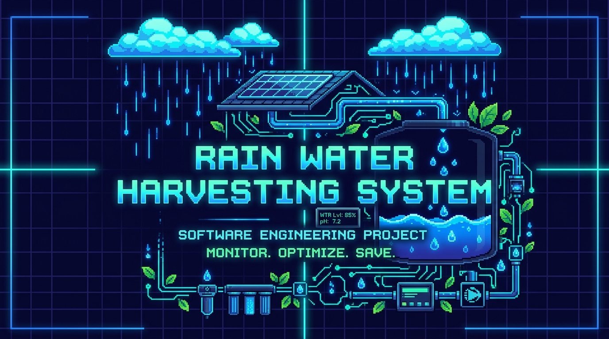
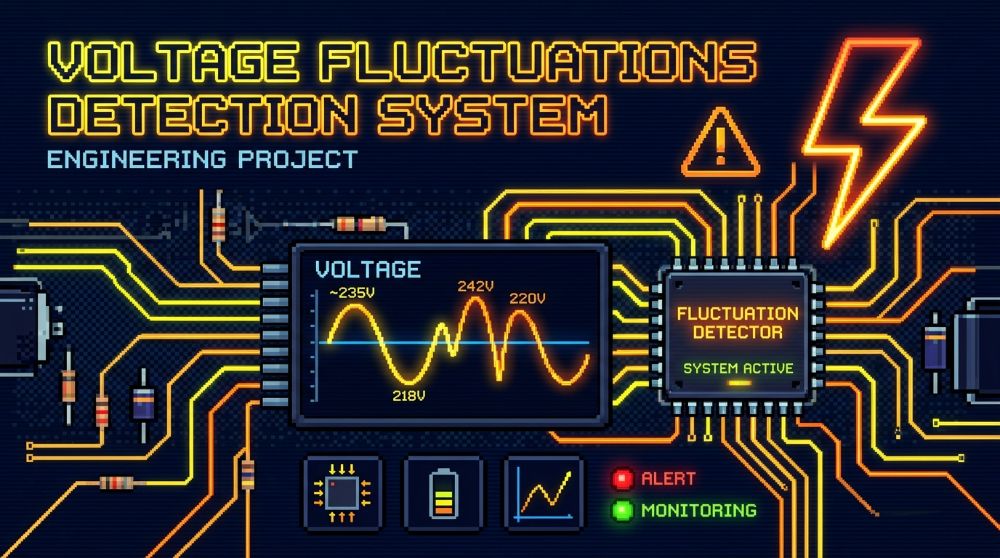
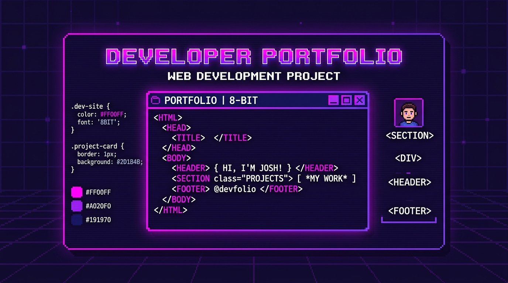

90 XP
Primary language for scripting, automation, and project logic
> I'M NAYANA R
"Dream It. Plan It. Work for It. Make it happen."
Undergraduate Software Engineer at AIT building practical applications, water harvesting solutions, and electrical safety systems.

Get to know the developer behind the code, her journey, and her aspirations
📍 Karnataka, India
I am an undergraduate Software Engineer pursuing my Bachelor of Engineering in Computer Science & Engineering at Adhichunchanagiri Institute of Technology. My passion lies in transforming theoretical computer science logic and mathematics into robust, real-world digital solutions.
With a solid foundation in Python, C, and Object-Oriented Programming, I enjoy developing software that bridges the gap between hardware constraints and intuitive user interfaces. I believe great engineering is not just about writing code—it's about building systems that create tangible value and solve pressing challenges.
Core languages, frameworks, tools & cross-domain competencies
Primary language for scripting, automation, and project logic
Low-level programming, memory management, systems thinking
OOP principles, class hierarchies, multi-paradigm foundations
Encapsulation, inheritance, polymorphism — applied in Python & C
Arrays, linked lists, stacks, queues, trees & hash maps
Big-O notation, sorting, searching, problem decomposition
Semantic markup, accessibility, SEO-friendly document structure
Flexbox, Grid, custom properties, dark mode, pixel art effects
DOM manipulation, events, async patterns, IntersectionObserver
Commit history, branching, pull requests, open-source workflow
Voltage sensors, relay modules, component integration & reliability
Real-time diagnostics, alert systems, data-driven safety mechanisms
Education, projects and career milestones — the journey so far
Adhichunchanagiri Institute of Technology, Chikkamagaluru
Immersed in core CS courses, programming abstractions, systems design and collaborative engineering projects. Actively building real-world full-stack web applications alongside coursework.
Environmental Sustainability Initiative — AIT
Conceptualised and built an eco-friendly rainwater harvesting initiative: collected and conserved rainwater for future use, researched groundwater recharge mechanisms and filtration suitable for rural and urban communities.
Electrical Safety & Monitoring — AIT Lab
Developed a hardware-software safety mechanism to rapidly detect voltage spikes and drops, protecting sensitive appliances. Handled component integration, sensor testing, and reliability metrics documentation.
Leadership & Communication Development Programme
Completed a structured programme cultivating high-performance teamwork, interpersonal communication skills and professional self-confidence — enabling more effective collaboration on group engineering projects.
RP Residential PU College, Hosadurga
Comprehensive training in Physics, Chemistry, Mathematics and Biology. Developed rigorous problem-solving foundations, analytical thinking, and the scientific method that underpin software engineering practice.
SMT Indira Gandhi Residential School, B Durga
Graduated with distinction. Built strong analytical fundamentals, cultivated intellectual discipline, and developed a curiosity-driven approach to science and technology that sparked the journey into computer science.
Click any project thumbnail to explore full details, tech stack & outcomes

Eco-friendly water conservation initiative for urban & rural communities

Hardware-software system detecting voltage spikes to protect appliances

Retro pixel-art portfolio with dark/light theme engine & animations
Portfolio intro, project demos & engineering inspiration
A curated walkthrough of what it means to build a meaningful Computer Science engineering portfolio — covering real projects, technical skills, and the journey from academic foundations to practical, working solutions. This video reflects the same spirit as Nayana's portfolio: turning theory into tangible, impactful software.
Comprehensive Python fundamentals — mirroring Nayana's primary programming language (90 XP), used for scripting, automation, and project logic.
Concept walkthrough for rainwater collection & filtration — directly backing Nayana's environmental sustainability project for urban and rural communities.
Modern portfolio techniques using Semantic HTML5, CSS3 & ES6+ JavaScript — the exact stack powering Nayana's developer portfolio.
What professors, mentors, and collaborative teammates say
"Nayana exhibits remarkable discipline and academic curiosity. Her dedication to understanding both low-level mechanics and real-world system impact makes her an outstanding engineering talent."
"Collaborating with Nayana on the Rainwater Harvesting initiative showed me her strong problem-solving acumen and leadership. She consistently delivers well-researched, dependable work."
"In our Voltage Fluctuations Detection testing, Nayana was exceptionally thorough with hardware-software validation, ensuring zero errors and clear system documentation."
Chat with Nayana's virtual assistant bot or test quick queries
Interested in collaborating or have an opportunity? Let's connect!
Feel free to reach out via email or phone. I'm always open to discussing new ideas, software engineering opportunities, or academic collaborations.